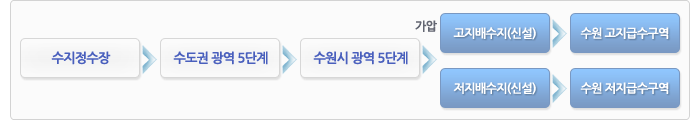
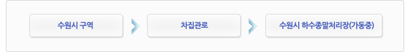

한번쯤 마음에 두었던 도시, 자연이 완성해가는 산소 도시
수원시 유시티입니다.
수원시 유시티입니다.
2016.08.09 15:00
29
비
- 통합대기환경지수
- 보통
- 오존
- 보통
- 미세먼지
- 보통
- 초미세먼지
- 보통
- 부패지수
- 좋음
- 아황산가스
- 좋음
- 이산화질소
- 좋음
- 일산화탄소
- 좋음
광교U-City 호매실U-City
공급처리시설
- 기본방향
- 사업지구 급수구역은 수원시 급수구역과 용인시 급수구역으로 구분
- 수원시 수도정비기본계획 및 용인시 수도정비기본계획 의거 계획수립
- 사업지구의 상수도 공급시설은 수도권 광역상수도 시설과 연계하여 계획함으로써 안전하고 풍부한 용수를 공급하므로서 용수공급 서비스 수준 향상을 도모하며 관망은 안정적인 급수를 위한 망목식 Block System 채택하여 공급량 및 소비량, 누수량 등의 측정 분석이 가능한 관리체계 도입
- 용도별 사용수량 및 토지이용계획에 따른 추가 용량 산정으로 원활한 용수공급계획 수립 및 효율적이며 안정적인 급수가 가능토록 계획함 수원시 급수구역  용인시 급수구역

- 기본방향
- 주변의 수려한 자연환경 보전과 쾌적한 삶의 질 향상 및 사업지구내외 자연형 친수하천의 수질개선을 위한 분류식 하수처리계획 수립
- 배수구역의 특성 및 기존 배수체계 조사ㆍ분석을 통한 효율적이고 합리적인 관망계획으로 관로의 원활한 흐름유지 및 적정 통수
- 능력의 확보
- 주변지역 장래 개발 가능성 및 주변 지역의 침수방지를 위한 견고하고 안전한 우수처리 기반시설 구축
- 도시화에 따른 강우 유출증가 억제 및 지하수 함양증진을 위한 우수저류시설의 설치계획수립으로 수자원 절약 및 자연재해 방지
- 우수 처리계획
- 강우시 지구내ㆍ외 강우 유출량은 토지이용계획에 따른 계획가로망 우수관로를 통하여 사업지구내 지방2급하천(원천리천, 여천, 가산천) 및 7개소의 소하천(산의천, 아래쇠죽골천, 동녘쇠죽골천, 쇠죽골천, 성죽천, 절골천, 산의실천)으로 방류 예정
- 기본방향
- 상위계획인『수원시 하수도정비 기본계획변경(2001.7)』및『용인시 하수도정비 기본계획변경(2006.8)』을 준수하여 합리적인 오수처리계획의 수립
- 기존 하수처리구역의 처리계통 조사ㆍ분석을 통한 효율적인 관망계획으로 사업지구 발생오수 및 지구외 유입오수의 적정처리
- 오수처리시설은 수원시 구역은 수원 하수종말처리장을 이용하고, 용인시 구역은 현재 용인시 민자사업으로 건설중인 상현 하수 종말처리장을 이용하여 처리
- 사업지구내 하수종말처리장의 처리수의 재이용(중수도, 하천유지용수, 조경용수, 살수용수)방안 검토로 수자원 절약 및 쾌적한 주거 환경의 제공 도모
- 오수처리계획
- 상위계획 및 토지이용계획에 따른 부지조성계획에 따라 2개 처리구역으로 구분되며, 발생 오수량 전량을 차집하여 각 처리구역의 하수종말처리장에서 처리
- 수원시 수도정비기본계획 및 용인시 수도정비기본계획 의거 계획수립 수원시 처리구역 계통도  용인시 처리구역 계통도